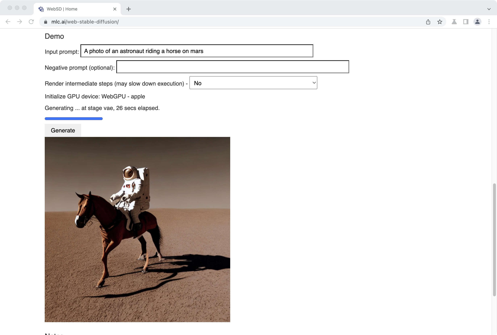

Web Stable Diffusion
This project brings stable diffusion models to web browsers. Everything runs inside the browser with no server support. Please check out our GitHub repo to see how we did it. There is also a demo which you can try out.

We have been seeing amazing progress through AI models recently. Thanks to the open-source effort, developers can now easily compose open-source models together to produce amazing tasks. Stable diffusion enables the automatic creation of photorealistic images as well as images in various styles based on text input. These models are usually big and compute-heavy, which means we have to pipe through all computation requests to (GPU) servers when developing web applications based on these models. Additionally, most of the workloads have to run on a specific type of GPUs where popular deep-learning frameworks are readily available.
This project takes a step to change that status quo and bring more diversity to the ecosystem. There are a lot of reasons to get some (or all) of the computation to the client side. There are many possible benefits, such as cost reduction on the service provider side, as well as an enhancement for personalization and privacy protection. The development of personal computers (even mobile devices) is going in the direction that enables such possibilities. The client side is getting pretty powerful. For example, the latest MacBook Pro can have up to 96GB of unified RAM that can be used to store the model weights and a reasonably powerful GPU to run many of the workloads.
Wouldn’t it be fun to directly bring the ML models to the client, have the user open a browser tab, and instantly run the stable diffusion models on the browser? This project provides the first affirmative answer to this question.
Text to Image Generation Demo
Because WebGPU is not yet fully stable, nor have there ever been such large-scale AI models running on top of WebGPU, so we are testing the limit here. It may not work in your environment. So far, we have only tested it on Mac with M1/M2 GPUs in Chrome Canary (a nightly build of Chrome) because WebGPU is quite new. We have tested on Windows and it does not work at this moment due to possible driver issues. We anticipate the support broadens as webgpu matures. Please check out the use instructions and notes below.
Instructions
If you have a Mac computer with Apple silicon, here are the instructions for you to run stable diffusion on your browser locally:
- Install Chrome Canary, a developer version of Chrome that enables the use of WebGPU.
- Launch Chrome Canary. You are recommended to launch from terminal with the following command:
/Applications/Google\ Chrome\ Canary.app/Contents/MacOS/Google\ Chrome\ Canary --enable-dawn-features=disable_robustnessThis command turns off the robustness check from Chrome Canary that slows down image generation to times. It is not necessary, but we strongly recommend you to start Chrome with this command.
- Enter your prompt, click “Generate” – we are ready to go! The image generation will start after downloading and fetching the model parameters to local cache. The download may take a few minutes, only for the first run. The subsequent refreshes and runs will be faster.
- Feel free to enter different prompts as well as negative prompts to generate the image you want.
- We provide an option to render images for the intermediate steps of UNet stage. Select “Run VAE every two UNet steps after step 10” for “Render intermediate steps” and click “Generate” again, and you will see how an image gets generated along the process.
Demo
Negative prompt (optional):
Notes
- As WebGPU does not support FP16 at this moment, the memory consumption of running the demo is about 7GB. For Apple silicon Mac with only 8GB of unified memory, it may take longer (a few minutes) to generate an image. This demo may also work for Mac with AMD GPU.
- Please check out our GitHub repo for running the same shader flow locally on your GPU device through the native driver. Right now, there are still gaps (e.g., without launching Chrome from command line, Chrome’s WebGPU implementation inserts bound clips for all array index access, such that
a[i]becomesa[min(i, a.size)], which are not optimized out by the downstream shader compilers), but we believe it is feasible to close such gaps as WebGPU dispatches to these native drivers.
Disclaimer
This demo site is for research purposes only. Please conform to the uses of stable diffusion models.